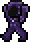

| Possessed Armor |
|---|
|  |
|---|
| Statistics |
|---|
| |
| Type | Enemy |
| AI Type | Fighter |
| Damage | 55 |
| Max Life | 260 |
| Defense | 28 |
The Possessed Armor is a hardmode enemy that spawns in all biomes during the night, even underground. These enemies are much more powerful than your average Zombie, and are a very large threat to your NPCs, particularly during a Blood Moon, where they have the same ability as zombies to open doors that are not otherwise reinforced. Due to their nature, they have extremely high defense, which, coupled with their high life and attack, makes them a force to be reckoned with.
History
- 1.1: Introduced.
- Early mentions: